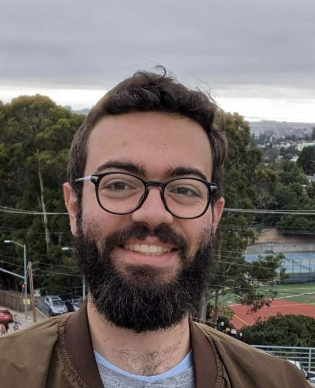
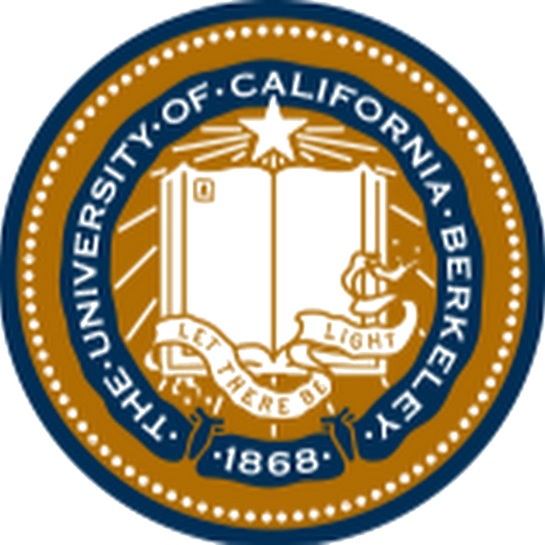

Angelos Pelecanos
I am a first-year Ph.D. student in Computer Science at UC Berkeley, fortunate to be advised by Prof. Shafi Goldwasser.
My research interests lie in the theoretical analysis of practical cryptosystems, such as block ciphers, and in cryptography in the quantum age.
In Spring 2022 I received an M.Eng. degree from MIT, where I was lucky to work under the supervision of Prof. Vinod Vaikuntanathan. I graduated with a bachelors degree in Computer Science and Engineering and in Mathematics in Spring 2021 from the same institution. I am grateful for the mentorship of Prof. Virginia Vassilevska Williams during my undergraduate studies.
Email: apelecan at berkeley dot edu.

Publications
Education
| Ph.D. in Computer Science | 2022 - Present | |
|  University of California Berkeley | ||
| M.Eng. in Computer Science and Engineering | 2021 - 2022 | |
| B.Sc. in Computer Science and Engineering and Mathematics | 2017 - 2021 | |
Talks
Classical vs Quantum Advice and Proofs under Classically-Accessible Oracle- Quantum Brainstorming Session, Simons Institute for the Theory of Computing, Spring 2023
Activities
Reviewer for CRYPTO 2023Teaching Assistant for Quantum Query Complexity, PCMI Graduate Summer School, July 2023
Teaching
| Fall 2021 | ||
| Teaching Assistant | ||
| Fall 2020, Spring 2021 | ||
| Teaching Assistant |
Professional Experience
| Hudson River Trading | Summer 2021 | |
| Algorithm Developer Intern | ||
| Citadel | Summer 2019 | |
| Software Engineering Intern | ||
| Tech Square Trading | Winter 2019 | |
| Quantitative Trading Intern | ||
| QuantCo | Summer 2018 | |
| Software Engineering Intern |